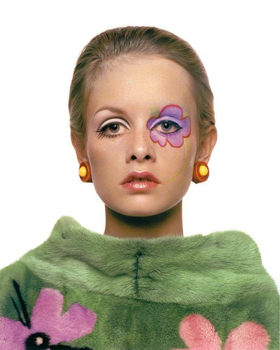
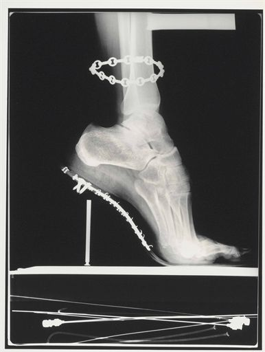
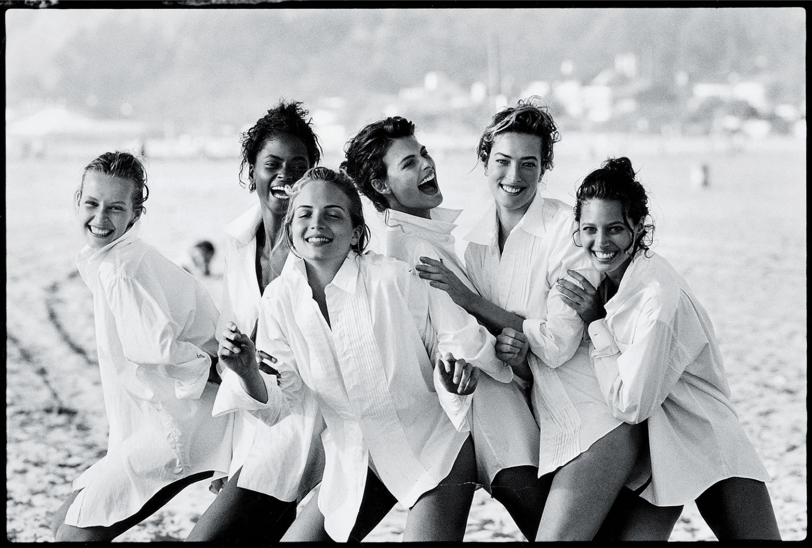

Richard Avedon (1923-2004)
Richard Avedon was an American fashion and portrait photographer. He worked for Harper's Bazaar and Vogue, specializing in capturing movement in still pictures of fashion, theater and dance.

Malcolm X, 1963 © Richard Avedon

Twiggy, American Vogue, 1967 © Richard Avedon
Irving Penn (1917-2009)
Irving Penn was an American photographer known for his fashion photography, portraits, and still lifes. Penn's career included work at Vogue magazine, and independent advertising work for clients including Issey Miyake and Clinique.

Man Lighting Girl's Cigarette (Jean Patchett), New York, 1949 © The Irving Penn Foundation

Issey Miyake, American Vogue, 1995 © The Irving Penn Foundation
Helmut Newton (1920-2004)
Helmut Newton was a German-Australian photographer. He was a prolific, widely imitated fashion photographer whose provocative, erotically charged black-and-white photos were a mainstay of Vogue and other publications.

Le Smoking. Yves Saint Laurent, French Vogue, Rue Aubriot, Paris, 1975 © Helmut Newton Estate

X-Ray, French Vogue, 1994 © Helmut Newton Estate
Peter Lindbergh (1944-2019)
Peter Lindbergh was a German fashion photographer and film director. In 1971, he turned to photography and worked for the Stern magazine.

Christy Turlington, Vivienne Westwood, American Vogue, 1988 © Peter Lindbergh

Christy Turlington, Linda Evangelista, Tatjana Patitz, Estelle Lefebure, Rachel Williams and Karen Armstrong, American Vogue, 1988 © Peter Lindbergh